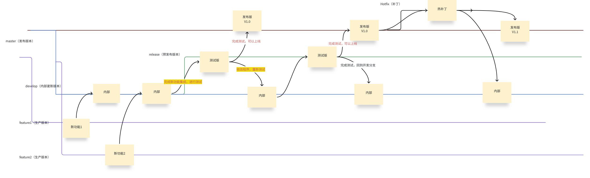

Git 基础命令及规范
Git 记录每一次改动，让多人可以在同一份代码上工作。 这一部分从建仓库、提交开始，讲到分支、远程仓库、冲突处理与回退， 最后落到提交信息和分支命名的规范。要求是会用：跟着做一遍， 知道每一步在做什么，不要求背参数。
下面的命令都在 /tmp/other-basics/示例代码 下执行。
如果没有按第 0 部分准备过练习目录，或者准备之后重启过电脑，
先在课程文件夹里重新执行下面几行：
rm -rf /tmp/other-basics
mkdir -p /tmp/other-basics
cp -r 示例代码 /tmp/other-basics/
cd /tmp/other-basics/示例代码
第一行会删除整个练习副本，路径不要改成自己的目录。
复制完成后，用 pwd 确认当前目录是
/tmp/other-basics/示例代码。
2.1仓库、暂存区与提交
Git 把项目的历史保存在仓库里。一个仓库就是一个目录，里面除了项目文件，
还有一个隐藏的 .git 目录，提交、分支和仓库配置都放在那里。
这一课从一个空仓库开始，走一遍「改文件、暂存、提交」的流程。
建仓库与身份
进入练习目录 2.1-第一次提交。目录里有两个文件：
一个说明文件和一个计算平均分的 Python 脚本。先把它变成一个 Git 仓库：
cd /tmp/other-basics/示例代码/2.1-第一次提交
git init -b mainInitialized empty Git repository in /tmp/other-basics/示例代码/2.1-第一次提交/.git/
git init 在当前目录建立仓库，也就是创建 .git 目录；
-b main 把初始分支命名为 main。
这两步没有改动项目文件，只是在目录里多了一个隐藏目录。
-b 选项需要 Git 2.28 及以上；更老的版本可以先执行
git init，再执行 git branch -m main。
Git 会在每次提交里记录作者的名字和邮箱。第一次使用某个仓库时， 先设置这两项：
git config user.name "alice"
git config user.email "alice@example.com"
课里用示例身份 alice 与 alice@example.com；
读者练习时换成自己的名字和邮箱即可。这两条命令不加 --global，
只写入当前仓库的 .git/config，不会影响这台机器上的其他仓库。
加上 --global 会写入用户主目录下的全局配置，对之后新建的仓库都生效；
本课不要求改全局配置。想看当前生效的值，可以执行：
git config user.name
git config user.emailalice alice@example.com
如果后面的提交提示 Please tell me who you are，
说明这两项还没有设置，回到这里补上即可。
三个区域
Git 把一次提交分成三步，对应三个区域：
- 工作区（working tree）：目录里能直接看到、直接编辑的文件。
-
暂存区（staging area，也叫索引 index）：下一次提交的草稿。
git add把工作区的改动放进这里。 -
本地仓库：已经提交的历史，保存在
.git目录里。git commit把暂存区的内容写成一次提交。
git status 用来说明每个文件处在哪个状态。刚建好的仓库里执行：
git statusOn branch main
No commits yet
Untracked files:
(use "git add <file>..." to include in what will be committed)
README.md
average.py
nothing added to commit but untracked files present (use "git add" to track)
输出里的 On branch main 表示当前在 main 分支；
No commits yet 表示仓库里还没有提交；
Untracked files 下面是 Git 从未记录过的文件。
未跟踪的文件不会自动进入提交，必须先用 git add 放进暂存区。
第一次提交
先把说明文件放进暂存区，再看一次状态：
git add README.md
git statusOn branch main
No commits yet
Changes to be committed:
(use "git rm --cached <file>..." to unstage)
new file: README.md
Untracked files:
(use "git add <file>..." to include in what will be committed)
average.py
README.md 这时出现在 Changes to be committed 下面，
表示它已经进入暂存区；average.py 仍是未跟踪状态。
确认暂存的内容之后，执行提交：
git commit -m "添加 README"[main (root-commit) c63254f] 添加 README 1 file changed, 3 insertions(+) create mode 100644 README.md
方括号里是本次提交的信息：分支名 main、
root-commit 表示这是第一个提交、c63254f 是提交号的缩写。
提交号由内容、作者、时间等一起算出来，每次都会不同；
读者屏幕上不会是这一串，后面看到别的提交号也按同样方式理解。
-m 后面是提交信息，用引号括起来。
再把脚本提交进去：
git add average.py
git commit -m "添加平均分计算脚本"[main 2afe688] 添加平均分计算脚本 1 file changed, 2 insertions(+) create mode 100644 average.py
两次提交之后，工作区、暂存区和最后一次提交的内容一致，状态应当是干净的：
git statusOn branch main nothing to commit, working tree clean
改动、暂存与差异
在脚本末尾追加一行输出，再查看状态：
echo 'print("计算完成")' >> average.py
git statusOn branch main
Changes not staged for commit:
(use "git add <file>..." to update what will be committed)
(use "git restore <file>..." to discard changes in working directory)
modified: average.py
no changes added to commit (use "git add" and/or "git commit -a")
Changes not staged for commit 表示文件改过了，但改动还在工作区，
没有放进暂存区。看具体改了哪几行，用 git diff：
git diffdiff --git a/average.py b/average.py
index 72c7723..9cdc461 100644
--- a/average.py
+++ b/average.py
@@ -1,2 +1,3 @@
scores = [88, 92, 79]
print(sum(scores) / len(scores))
+print("计算完成")
以 - 开头的行是改动前的内容，以 + 开头的是改动后的内容；
@@ -1,2 +1,3 @@ 说明这一段从第 1 行开始，原来有 2 行，现在有 3 行。
git diff 比较的是工作区和暂存区。
把改动放进暂存区之后，再比较暂存区和最后一次提交：
git add average.py
git diff --stageddiff --git a/average.py b/average.py
index 72c7723..9cdc461 100644
--- a/average.py
+++ b/average.py
@@ -1,2 +1,3 @@
scores = [88, 92, 79]
print(sum(scores) / len(scores))
+print("计算完成")
这时的 git diff 不会再显示这段差异，因为工作区和暂存区已经一致；
git diff --staged 比较的是暂存区和最后一次提交，仍然能看到准备提交的内容。
最后提交：
git commit -m "脚本结束时打印提示"[main 02611e6] 脚本结束时打印提示 1 file changed, 1 insertion(+)
git commit 只会把暂存区里的内容写进提交。修改了文件却忘了
git add，这次提交不会包含那部分改动；暂存区为空时，
Git 会提示 nothing to commit。
查看历史
提交完成后，用 git log 查看历史。下面两条命令分别看简表和最近一次提交的摘要：
git log --oneline --decorate02611e6 (HEAD -> main) 脚本结束时打印提示 2afe688 添加平均分计算脚本 c63254f 添加 README
--oneline 让每条历史只占一行，依次是提交号缩写和提交信息；
最新的提交排在最上面。--decorate 显示分支和标签的名字，
(HEAD -> main) 表示当前检出的是 main 分支。
不加 --decorate 时，有些终端会显示这些名字，有些不会，
所以课里显式写上，保证输出一致。
只看最近一次提交的摘要和改动的文件，用 git show：
git show --stat --oneline HEAD02611e6 脚本结束时打印提示 average.py | 1 + 1 file changed, 1 insertion(+)
HEAD 指向当前提交；HEAD~1 表示它的上一个提交，
HEAD~2 表示再往前一个，后面讲回退时会用到。
把 --stat 去掉，git show 会连同具体差异一起显示。
.git 目录不要手动改
仓库的全部历史都在 .git 里。手动修改或删除里面的文件，
轻则让 Git 认不出状态，重则丢掉历史。要放弃一个仓库，
应当删除整个项目目录；只删 .git 会把目录变回普通文件夹，
历史也随之消失。这两种操作都不要在含有重要内容的目录上随手执行。
你现在能做什么：在空目录里建立仓库、设置提交身份、
把文件放进暂存区并提交，用 git status、git diff
和 git log 查看当前状态与历史。
2.2分支与合并
分支让一条工作线可以暂时独立出来：在分支上提交，不会影响主分支； 做完之后再合并回去。这一课在同一个练习仓库里建两条分支， 分别走一遍快进合并和三方合并。
分支是什么
分支本质上是一个指向某次提交的指针。仓库里有一个特殊的指针
HEAD，指向当前所在的分支；每次提交，当前分支的指针向前移动一步。
新建分支只是多了一个指针，不会复制文件，所以创建和切换都很快。
进入练习目录，先建立一个仓库并提交初始版本：
cd /tmp/other-basics/示例代码/2.2-分支与合并
git init -b main
git config user.name "alice"
git config user.email "alice@example.com"
git add README.md report.py
git commit -m "初始版本：输出报告标题"Initialized empty Git repository in /tmp/other-basics/示例代码/2.2-分支与合并/.git/ [main (root-commit) 2133d74] 初始版本：输出报告标题 2 files changed, 4 insertions(+) create mode 100644 README.md create mode 100644 report.py
列出本地分支：
git branch* main
前面的星号表示当前所在的分支。现在只有一个 main。
建分支并提交
新建一条功能分支并切过去，在报告脚本末尾加一行：
git switch -c feature-title
echo 'print("2026 春季学期")' >> report.py
git add report.py
git commit -m "在标题后加上学期"Switched to a new branch 'feature-title' [feature-title 2908f88] 在标题后加上学期 1 file changed, 1 insertion(+)
git switch -c 创建分支并立即切换过去；提交之后，
feature-title 指针向前移动，main 仍停在原来的提交。
切回主分支：
git switch mainSwitched to branch 'main'
切回之后，工作区里的文件恢复成 main 指向的那次提交的内容。
刚才在分支上追加的那一行看不见了，但它仍然保存在
feature-title 分支的提交里。
快进合并
把功能分支合并回主分支：
git merge feature-titleUpdating 2133d74..2908f88 Fast-forward report.py | 1 + 1 file changed, 1 insertion(+)
这次合并是快进（fast-forward）：main 在分叉之后没有新的提交，
Git 只要把 main 指针直接移到 feature-title 的位置，
不需要生成新的合并提交。Updating 2133d74..2908f88
表示指针从前者移到了后者。
如果希望即使能快进也保留一条单独的合并记录，可以加
--no-ff，让 Git 仍然生成一个合并提交。是否这样做取决于团队习惯；
默认行为是能快进就快进。
三方合并
再建一条分支，这次让两条分支都有新的提交。先在 feature-note
上补充说明：
git switch -c feature-note
cat >> README.md <<'EOF'
说明：分数为百分制。
EOF
git add README.md
git commit -m "补充分数说明"Switched to a new branch 'feature-note' [feature-note 40663e5] 补充分数说明 1 file changed, 2 insertions(+)
切回主分支，在主分支上也提交一次改动：
git switch main
echo 'print("共 3 名学生")' >> report.py
git add report.py
git commit -m "输出学生人数"Switched to branch 'main' [main e830aef] 输出学生人数 1 file changed, 1 insertion(+)
现在两条分支各自前进了一步。合并：
git merge feature-note -m "合并：补充分数说明"Merge made by the 'ort' strategy. README.md | 2 ++ 1 file changed, 2 insertions(+)
这次不是快进，因为 main 自己也有新提交。Git 找到两条分支的共同祖先，
把两边的改动合在一起，生成一个新的合并提交。这个提交有两个父提交：
一个是 main 原来的位置，一个是 feature-note。
两边的改动分别落在不同文件上，所以自动合并成功，没有冲突。
-m 用来指定合并提交的信息。不写 -m 时，
Git 会打开编辑器，让用户填写合并信息；课里统一用 -m，
避免依赖编辑器配置。合并策略名 ort 是 Git 当前使用的默认策略，
Git 版本不同时，这一行文字可能略有差异。
删除分支与查看图
分支合并之后，功能分支的提交已经包含在主分支里，可以删掉指针：
git branch -d feature-note
git branchDeleted branch feature-note (was 40663e5). * main
-d 只删除已经合并的分支；如果分支还有未合并的提交，Git 会拒绝删除。
确实要丢弃未合并的内容时才会用到 -D，那会失去分支上的提交，
不要在没有确认时使用。
用图形方式查看分支与提交的关系：
git log --graph --oneline --decorate --all* 437e117 (HEAD -> main) 合并：补充分数说明 |\ | * 40663e5 补充分数说明 * | e830aef 输出学生人数 |/ * 2908f88 在标题后加上学期 * 2133d74 初始版本：输出报告标题
--graph 在左侧画出分叉与合并，--all 把所有分支都纳入显示。
第一行是合并提交，下面两行分别是两条分支上的提交，最后汇合到共同的历史。
功能分支删除后，它的提交仍然通过合并提交保留在历史里。
switch 与 checkout
较新的 Git 用 git switch 切换分支，用 git switch -c
创建并切换分支。更早的文档和脚本里常见 git checkout：
git checkout feature-note 切换分支，
git checkout -b feature-note 创建并切换。
两者的分支操作基本等价；checkout 还能用来恢复文件，
职责更多，switch 则只负责切换分支，读起来更清楚。
新写的命令可以优先用 switch，读到旧命令时知道它们是一回事即可。
你现在能做什么：创建和切换分支、在分支上提交、
用快进与三方合并把分支合回主分支、删除已合并的分支，
并用 git log --graph 看懂分支历史。
2.3远程仓库与 SSH
远程仓库是放在另一台机器上的仓库副本，通常由代码托管平台或团队的服务器保存。
本地提交之后，把提交推送到远程，其他人才能看到；别人推送了新提交，
本地再把它们拉下来。这一课用一个本地目录模拟远端，不需要联网，
也不需要账号，就能把 clone、push、fetch、
pull 走一遍。
远程仓库与 origin
本地仓库可以登记若干个远程仓库，每个远程有一个名字。
git clone 自动创建的名字是 origin，
它只是「默认远端」的惯用名，不是特殊关键字。
一个远程保存两个地址：读取（fetch）用的和写入（push）用的；
多数情况下两者相同。
建一个本地远端
真正的远端通常是一个 URL。练习时用一个裸仓库（bare repository）代替： 它只有历史，没有工作区，不能直接在里面编辑文件，作用和服务器上的仓库一样。 在练习目录里执行：
cd /tmp/other-basics/示例代码/2.3-远程仓库
git init --bare -b main remote.gitInitialized empty Git repository in /tmp/other-basics/示例代码/2.3-远程仓库/remote.git/
--bare 表示只建历史、不建工作区。目录名以 .git
结尾是常见约定，方便一眼看出它是仓库而不是普通项目目录。
克隆、提交、推送
从远端克隆一份工作副本：
git clone remote.git workCloning into 'work'... warning: You appear to have cloned an empty repository. done.
远端还是空的，所以 Git 给出这条警告，克隆本身仍然成功。 进入工作副本，设置身份，把项目文件复制进来，提交并推送：
cd work
git config user.name "alice"
git config user.email "alice@example.com"
cp ../项目文件/README.md .
cp ../项目文件/score.py .
git add README.md score.py
git commit -m "初始提交：计分工具"
git push -u origin main[main (root-commit) c6e067f] 初始提交：计分工具 2 files changed, 5 insertions(+) create mode 100644 README.md create mode 100644 score.py To /tmp/other-basics/示例代码/2.3-远程仓库/remote.git * [new branch] main -> main branch 'main' set up to track 'origin/main'.
git push -u origin main 把本地 main 推到名为
origin 的远端，并在远端建立同名分支。
-u 同时设置上游分支（upstream）：之后在这个分支上直接执行
git push 或 git pull，Git 就知道该和哪个远端分支同步。
输出里的 To ... 是远端地址；练习用的是本地路径，
真实远端的输出会是一个网络地址。
查看远程配置：
git remote -vorigin /tmp/other-basics/示例代码/2.3-远程仓库/remote.git (fetch) origin /tmp/other-basics/示例代码/2.3-远程仓库/remote.git (push)
拉取别人的改动
再克隆一份，模拟另一位成员。第二份副本使用另一个示例身份， 在说明文件里补一行用法，提交并推送：
cd ..
git clone remote.git other
cd other
git config user.name "bob"
git config user.email "bob@example.com"
cat >> README.md <<'EOF'
用法：python3 score.py
EOF
git add README.md
git commit -m "补充用法说明"
git pushCloning into 'other'... done. [main d70905e] 补充用法说明 1 file changed, 2 insertions(+) To /tmp/other-basics/示例代码/2.3-远程仓库/remote.git c6e067f..d70905e main -> main
回到第一份副本，先抓取远端的新提交：
cd ../work
git fetchFrom /tmp/other-basics/示例代码/2.3-远程仓库/remote c6e067f..d70905e main -> origin/main
git fetch 只把远端的新提交下载到本地，更新
origin/main 这个远程跟踪分支，不改动当前工作区和本地
main。所以抓取之后状态会显示「落后于远端」：
git statusOn branch main Your branch is behind 'origin/main' by 1 commit, and can be fast-forwarded. (use "git pull" to update your local branch) nothing to commit, working tree clean
确认之后，把远端改动合并进来：
git pullUpdating c6e067f..d70905e Fast-forward README.md | 2 ++ 1 file changed, 2 insertions(+)
git pull 相当于先 fetch，再把远端分支合并到当前分支。
这次两端没有分叉，所以是快进合并。如果本地也有新提交，
pull 可能生成合并提交，甚至产生冲突；想先看清楚再合并时，
可以像上面这样先 fetch，用 git log 或
git diff 查看 origin/main 与本地分支的差别，
确认后再执行 git merge origin/main 或 git pull。
拉取之后，说明文件里已经有了对方补的那一行：
cat README.md# 计分工具 统计比赛得分。 用法：python3 score.py
这里的 other 与 work 都是同一个远端的克隆，
只是用两个目录模拟两个人。真实多人协作时，每个人在自己的机器上克隆、
提交、推送，通过远端交换改动。
SSH 密钥与登记
使用 SSH 地址访问代码托管平台时，需要用密钥证明身份。 密钥成对生成：私钥留在自己机器上，公钥登记到平台。 生成命令如下，在自己的机器上执行，不要在练习目录里执行：
ssh-keygen -t ed25519 -C "你的邮箱"
命令会询问保存位置，默认是 ~/.ssh/id_ed25519，直接回车即可；
然后询问口令（passphrase），可以留空，也可以设置。
执行完成后会得到两个文件：id_ed25519 是私钥，
id_ed25519.pub 是公钥。把公钥的内容复制出来：
cat ~/.ssh/id_ed25519.pub
复制输出的整行内容，粘贴到代码托管平台的 SSH 密钥设置页面，保存即可。
只登记公钥；私钥不要发给任何人，不要粘贴到网页、聊天或仓库里。
如果 ~/.ssh/id_ed25519 已经存在，ssh-keygen
会先询问是否覆盖；已有可用密钥时不要覆盖，直接使用原来的公钥，
或者给新密钥换一个文件名。
登记之后可以测试连接。把主机名换成实际使用的平台域名：
ssh -T git@github.com
第一次连接会显示主机的指纹，询问是否继续，输入 yes 回车。
认证成功时，平台通常返回一句欢迎信息；不同平台的文字不同。
这条命令只验证 SSH 登录，不会传输仓库内容。课里不连接真实主机，
所以不贴具体输出。查看本机 SSH 版本：
ssh -VOpenSSH_9.6p1 Ubuntu-3ubuntu13.20, OpenSSL 3.0.13 30 Jan 2024
远程地址的两种写法
同一个远程可以用两种地址：
-
SSH：形如
git@github.com:用户名/仓库名.git。 使用上面登记的密钥认证，配置好之后不用每次输入密码。 -
HTTPS：形如
https://github.com/用户名/仓库名.git。 通常需要输入账号和访问令牌；网络环境对 443 端口更友好时可以用它。
已有的本地仓库要添加远程，用 git remote add。
当前所在的 work 是克隆出来的，origin 已经存在，
不能再用同名添加；下面在一个新的空仓库里演示写法：
cd ..
git init -b main demo
cd demo
git remote add origin git@github.com:用户名/仓库名.git
git remote -v
cd ..Initialized empty Git repository in /tmp/other-basics/示例代码/2.3-远程仓库/demo/.git/ origin git@github.com:用户名/仓库名.git (fetch) origin git@github.com:用户名/仓库名.git (push)
把地址换成自己的仓库地址即可。地址写错时用
git remote set-url origin 新地址 修改。
本课的练习远端是一个本地目录，不涉及 SSH，也不需要联网；
SSH 这一节只需要知道密钥怎么生成、公钥登记到哪里、私钥不能外传。
你现在能做什么：建立裸仓库模拟远端、克隆仓库、 推送本地提交、抓取并拉取别人的改动，查看和修改远程地址； 知道 SSH 密钥如何生成与登记，以及私钥为什么不能外传。
2.4冲突、回退与撤销
合并时两边改了同一处，Git 无法替人决定保留哪一边，就会停下来等待处理， 这就是冲突。已经提交的内容也可能需要撤销或抵消。这一课先把一个冲突解决完， 再逐项练习撤销工作区改动、取消暂存、撤销提交、反向提交和临时保存。 这些命令有的会丢失内容，课里会逐条标明。
冲突是怎么产生的
进入练习目录，建立仓库并提交初始配置。然后开一条分支，把超时改成 30 秒：
cd /tmp/other-basics/示例代码/2.4-冲突与回退
git init -b main
git config user.name "alice"
git config user.email "alice@example.com"
git add config.txt
git commit -m "添加超时与重试配置"
git switch -c feature-timeout
cat > config.txt <<'EOF'
timeout = 30
retries = 3
EOF
git add config.txt
git commit -m "把超时改为 30 秒"Initialized empty Git repository in /tmp/other-basics/示例代码/2.4-冲突与回退/.git/ [main (root-commit) 67b27db] 添加超时与重试配置 1 file changed, 2 insertions(+) create mode 100644 config.txt Switched to a new branch 'feature-timeout' [feature-timeout 322fec9] 把超时改为 30 秒 1 file changed, 1 insertion(+), 1 deletion(-)
切回主分支，把同一行改成 20 秒并提交：
git switch main
cat > config.txt <<'EOF'
timeout = 20
retries = 3
EOF
git add config.txt
git commit -m "把超时改为 20 秒"Switched to branch 'main' [main 77aa055] 把超时改为 20 秒 1 file changed, 1 insertion(+), 1 deletion(-)
现在两条分支都修改了配置文件的同一行。合并：
git merge feature-timeoutAuto-merging config.txt CONFLICT (content): Merge conflict in config.txt Automatic merge failed; fix conflicts and then commit the result.
Git 没有生成合并提交，而是把冲突留在工作区，等待人工解决。 状态里会列出未合并的路径：
git statusOn branch main
You have unmerged paths.
(fix conflicts and run "git commit")
(use "git merge --abort" to abort the merge)
Unmerged paths:
(use "git add <file>..." to mark resolution)
both modified: config.txt
no changes added to commit (use "git add" and/or "git commit -a")
both modified 表示两边都改了这个文件。此刻如果不想继续合并，
可以执行 git merge --abort，工作区会回到合并之前的状态。
看懂并解决冲突
打开冲突文件，会看到 Git 插入的标记：
cat config.txt<<<<<<< HEAD timeout = 20 ======= timeout = 30 >>>>>>> feature-timeout retries = 3
<<<<<<< HEAD 与 ======= 之间是当前分支
（main，也就是 HEAD）的内容；
======= 与 >>>>>>> feature-timeout
之间是待合并分支的内容。两边都只是「候选」，最终保留什么由人决定。
这里取一个折中的 25 秒，把整个文件改成想要的内容，并删掉所有冲突标记：
cat > config.txt <<'EOF'
timeout = 25
retries = 3
EOF
git add config.txt
git commit -m "合并两个超时改动，取 25 秒"[main 25572cc] 合并两个超时改动，取 25 秒
解决冲突的关键是三步：把文件改成最终想要的内容、确认文件里不再有冲突标记、
用 git add 告诉 Git 已经解决，然后提交。
git add 之后如果还有别的冲突文件，状态会继续列出它们；
全部解决并暂存后，git commit 才会完成这次合并。
合并完成后的历史：
git log --graph --oneline --decorate --all* 25572cc (HEAD -> main) 合并两个超时改动，取 25 秒 |\ | * 322fec9 (feature-timeout) 把超时改为 30 秒 * | 77aa055 把超时改为 20 秒 |/ * 67b27db 添加超时与重试配置
撤销工作区改动
下面的操作只影响工作区，不改变历史。把配置改成 99 秒，但先不暂存：
echo 'timeout = 99' > config.txt
git status --shortM config.txt
git status --short 每行两个状态位：左边是暂存区，右边是工作区。
这里的 M 表示暂存区没有变化，工作区有修改。
git diff 可以看具体差异，确认改错了之后，用
git restore 丢弃工作区的改动：
git restore config.txt
cat config.txttimeout = 25 retries = 3
git restore 不可恢复
git restore 用暂存区或最后一次提交的内容覆盖工作区文件，
被覆盖的未暂存改动不会进入任何提交，Git 也无法找回。
执行前先用 git diff 看清楚；如果改动还有用，
先提交或先 git stash，不要直接丢弃。
取消暂存
如果已经把改动放进了暂存区，但决定这次不提交，可以取消暂存。 改动本身仍留在工作区：
echo 'timeout = 99' > config.txt
git add config.txt
git status --shortM config.txt
这时的 M 表示改动已经进入暂存区，工作区与暂存区一致。
取消暂存：
git restore --staged config.txt
git status --shortM config.txt
状态又回到「工作区有改动、暂存区没有」。这时可以继续修改，
也可以像上一节那样用 git restore 丢弃改动。
较老的 Git 用 git reset HEAD 加上文件名完成同一件事；
新写法 git restore --staged 含义更直接。
撤销提交：soft、mixed、hard
先把上一节留在工作区的改动丢弃，再提交一个临时改动，用来练习撤销：
git restore config.txt
echo 'debug = false' >> config.txt
git add config.txt
git commit -m "添加 debug 开关"
git log --oneline --decorate -1[main 9b95f24] 添加 debug 开关 1 file changed, 1 insertion(+) 9b95f24 (HEAD -> main) 添加 debug 开关
git reset --soft HEAD~1 把当前分支退回到上一个提交，
这次提交的改动保留在暂存区：
git reset --soft HEAD~1
git log --oneline --decorate -1
git status25572cc (HEAD -> main) 合并两个超时改动，取 25 秒
On branch main
Changes to be committed:
(use "git restore --staged <file>..." to unstage)
modified: config.txt
这时可以重新提交，换成更清楚的提交信息，或者把改动拆成两次提交。 这里按原来的提交信息再提交一次，把分支恢复到刚才的位置：
git commit -m "添加 debug 开关"[main 7ac1d8e] 添加 debug 开关 1 file changed, 1 insertion(+)
不加 --soft 时，git reset HEAD~1 默认是
--mixed：退回到上一个提交，并取消暂存，
改动留在工作区：
git reset HEAD~1
git statusUnstaged changes after reset:
M config.txt
On branch main
Changes not staged for commit:
(use "git add <file>..." to update what will be committed)
(use "git restore <file>..." to discard changes in working directory)
modified: config.txt
no changes added to commit (use "git add" and/or "git commit -a")
先把刚才的改动再提交一次，回到同一个位置，然后看第三种写法。
git reset --hard HEAD~1 退回到上一个提交，
同时用提交里的内容覆盖工作区。未提交的改动会被丢弃：
git add config.txt
git commit -m "添加 debug 开关"
git reset --hard HEAD~1
git status
cat config.txt[main 5c0e2a1] 添加 debug 开关 1 file changed, 1 insertion(+) HEAD is now at 25572cc 合并两个超时改动，取 25 秒 On branch main nothing to commit, working tree clean timeout = 25 retries = 3
reset --hard 会丢改动
--hard 不询问确认，直接覆盖工作区。未提交的修改无法找回。
已经提交但被退掉的那次提交，通常还能用 git reflog
找到提交号并恢复一段时间，但工作区里没提交的内容不在其中。
只在确认工作区没有需要保留的内容时使用。
git reset 改的是本地分支指针，属于改写历史。
如果提交已经推送并与他人共享，不要用 reset 退掉它：
别人可能已经基于这些提交继续工作，历史对不上会带来更多麻烦。
共享分支上的撤销应当用下一节的 git revert。
用 revert 抵消提交
先重新提交一个临时改动，再用 git revert 生成一个反向提交：
echo 'debug = false' >> config.txt
git add config.txt
git commit -m "添加 debug 开关"
git revert HEAD --no-edit[main 304b01e] 添加 debug 开关 1 file changed, 1 insertion(+) [main 2d03e57] Revert "添加 debug 开关" Date: Sat Mar 14 13:09:00 2026 +0000 1 file changed, 1 deletion(-)
git revert 不删除原来的提交，而是新建一个提交，
把指定提交的改动反过来做一遍。历史完整保留，其他人拉取时不会出现分叉，
所以适合已经推送的提交。--no-edit 表示直接使用默认的
反向提交信息，不打开编辑器。日期只是这台机器上的示例，读者执行时会是当前时间。
revert 一个合并提交时，Git 无法判断要按哪一条父提交反向计算，
会要求用 -m 指定主干方向（例如 -m 1）。
这种情况较少见，执行前应当先确认历史结构；本课不展开。
临时保存：stash
改动还没做完，但需要临时切去处理别的事情，可以先把改动收起来。
把超时改成 99 秒，然后执行 git stash：
echo 'timeout = 99' > config.txt
git stash
git status
cat config.txtSaved working directory and index state WIP on main: 2d03e57 Revert "添加 debug 开关" On branch main nothing to commit, working tree clean timeout = 25 retries = 3
git stash 把已跟踪文件的未提交改动收进一个栈，工作区恢复到
最后一次提交的状态。查看栈里的条目：
git stash liststash@{0}: WIP on main: 2d03e57 Revert "添加 debug 开关"
需要时取回来：
git stash pop
git status
cat config.txtOn branch main
Changes not staged for commit:
(use "git add <file>..." to update what will be committed)
(use "git restore <file>..." to discard changes in working directory)
modified: config.txt
no changes added to commit (use "git add" and/or "git commit -a")
Dropped refs/stash@{0} (e16f75b3a0c718cd4455c7e912bda1d59498a1fd)
timeout = 99
git stash pop 把栈顶的改动取回工作区，并删除这条记录；
git stash apply 只取回、不删除，适合还想保留一份的情况；
git stash drop 删除栈顶记录。栈里的记录保存在本地，
不会随 push 传到远端。
默认的 stash 只收已跟踪文件；新建的、还没被 Git 跟踪的文件
不会进去，需要加 -u。stash 只是临时存放，
不适合代替提交：长期未处理的 stash 容易被遗忘，重要改动应当尽快提交到分支。
练习结束时把工作区恢复干净：
git restore config.txt
git status --short哪些操作会丢东西
把这一课的命令按影响列在一起。执行任何一条之前，先看清它动的是工作区、 暂存区还是历史。
| 操作 | 作用 | 未提交的改动 | 历史 |
|---|---|---|---|
git restore 文件 |
丢弃工作区改动 | 丢失 | 不变 |
git restore --staged 文件 |
取消暂存 | 保留在工作区 | 不变 |
git reset --soft HEAD~1 |
撤销最近一次提交 | 保留在暂存区 | 本地历史后退一步 |
git reset HEAD~1 |
撤销提交并取消暂存 | 保留在工作区 | 本地历史后退一步 |
git reset --hard HEAD~1 |
撤销提交并覆盖工作区 | 丢失 | 本地历史后退一步 |
git revert HEAD |
生成反向提交 | 不影响 | 历史向前一步 |
git stash |
临时收起改动 | 移入 stash 栈 | 不变 |
git reflog 是最后一道线索
git reflog 记录 HEAD 最近到过哪些提交。
误用了 reset，或者切走了一个分支之后找不到提交，
可以先用它找到提交号，再决定怎么恢复。它记录的是本地操作，
不是永久备份；时间久了或者仓库被重新克隆，这些记录也会消失。
重要的内容仍然应当及时提交并推送到远端。
你现在能做什么：看懂并解决合并冲突，
用 restore 撤销工作区改动或取消暂存，
用 reset 的三种模式撤回本地提交，用 revert
抵消已经共享的提交，用 stash 临时保存改动；
并知道每条命令会不会丢失内容。
2.5提交信息规范
提交信息是写给以后的人看的，包括几个月后的自己。排查问题时，
git log 是最先翻的东西；一条清楚的提交信息能省下大量时间。
这一课讲三件事：一次提交只做一件事、标题和正文各写什么、提交前检查什么。
这一课不只是通用介绍，也是本组的组内提交规范。从读到这里之后的提交开始， 自己与队内仓库的新提交都按这一课的要求写；合并请求和代码评审也按同样的 标准检查。已有的历史提交不要求回改。
一次提交只做一件事
一次提交应当对应一个完整而单一的改动：修一个错误、加一个功能、 补一段文档、做一次不改变行为的重构。把不相关的事情混在一次提交里， 会带来几个实际问题：
- 评审时看不清哪些改动属于哪件事，容易漏看；
- 需要撤销其中一件事时，没法只撤销那一部分；
- 以后用
git log或git blame追查原因时，历史会变得含糊。
如果一次改了多个文件，但这些文件共同完成一件事，可以放在同一次提交里；
如果两件事互不相关，就分成两次。暂存时按文件逐个 git add，
比一次把所有改动都放进暂存区更容易控制提交的范围。
标题与正文
进入练习目录，先提交一个带标题和正文的版本：
cd /tmp/other-basics/示例代码/2.5-提交信息
git init -b main
git config user.name "alice"
git config user.email "alice@example.com"
git add README.md score.py
git commit -m "添加计分工具" -m "读取固定的三个分数，输出总分。"Initialized empty Git repository in /tmp/other-basics/示例代码/2.5-提交信息/.git/ [main (root-commit) c6a46f7] 添加计分工具 2 files changed, 5 insertions(+) create mode 100644 README.md create mode 100644 score.py
-m 可以写多次，每一次是一段：第一段成为标题，后面各段成为正文，
Git 会在标题和正文之间自动空一行。查看完整的提交信息：
git log -1 --format=%B添加计分工具 读取固定的三个分数，输出总分。
%B 表示提交信息的原始正文，不含作者、日期和提交号。
标题应当满足：
- 一行写完，说清楚「做了什么」，让人不点开也知道这次提交的范围；
- 长度控制在几十个字以内，手机上也能看全；
- 结尾不加句号，不用「更新」「修改」这类没有信息量的词；
- 使用祈使语气或名词短语，例如「添加计分工具」「修正空列表处理」，不写「我加了……」。
正文用来解释「为什么」：原来的问题是什么、为什么选这个做法、 有什么影响或需要注意的地方。标题已经说清「做了什么」，正文不必重复 diff 里能看到的细节。正文每行控制在七十个字符左右，终端里读起来不费劲。
对比几组写法：
| 不清楚的写法 | 更清楚的写法 | 原因 |
|---|---|---|
改了一下 |
fix: 修正平均分的显示 |
说清改了哪件事，而不是「有改动」 |
update |
docs: 补充运行方法 |
指出改的是文档，以及补了什么 |
修复 bug |
fix: 空列表时不再崩溃 |
写清触发条件和结果，方便搜索 |
新增功能 |
feat: 支持从文件读取分数 |
说明新增的能力，而不是笼统的「功能」 |
常见类型前缀
不少团队在标题前加一个类型前缀，用冒号与摘要隔开，例如
fix: 空列表时不再崩溃。常见的几类：
| 前缀 | 用途 | 例子 |
|---|---|---|
feat | 新增功能 | feat: 支持从文件读取分数 |
fix | 修正错误 | fix: 空列表时不再崩溃 |
docs | 文档 | docs: 补充运行方法 |
refactor | 重构，不改变外部行为 | refactor: 把平均分计算拆成函数 |
test | 测试 | test: 补充空列表用例 |
chore | 构建、依赖、脚本等杂项 | chore: 更新构建脚本 |
需要说明影响范围时，可以写成 fix(parser): ... 这样的形式，
括号里是模块名。这套写法常被称为约定式提交（Conventional Commits），
很多项目采用，但不是 Git 的强制规定。先看当前仓库已有的提交风格：
团队已经统一用中文标题加正文时，就跟着现有风格写；团队约定使用前缀时，
再按前缀写。本课示例里两种都能看到，重点是标题具体、正文说清原因，
前缀只是帮助分类的辅助手段。
提交前自查
修改脚本，让输出带上「总分：」三个字，然后按顺序检查再提交：
cat > score.py <<'EOF'
scores = [12, 7, 9]
print("总分：", sum(scores))
EOF
git status
git diffOn branch main
Changes not staged for commit:
(use "git add <file>..." to update what will be committed)
(use "git restore <file>..." to discard changes in working directory)
modified: score.py
no changes added to commit (use "git add" and/or "git commit -a")
diff --git a/score.py b/score.py
index 1bc85f7..1a36547 100644
--- a/score.py
+++ b/score.py
@@ -1,2 +1,2 @@
scores = [12, 7, 9]
-print(sum(scores))
+print("总分：", sum(scores))
确认改动符合预期后，暂存并再看一次即将提交的内容：
git add score.py
git diff --stageddiff --git a/score.py b/score.py
index 1bc85f7..1a36547 100644
--- a/score.py
+++ b/score.py
@@ -1,2 +1,2 @@
scores = [12, 7, 9]
-print(sum(scores))
+print("总分：", sum(scores))
git diff --staged 显示的是这次提交真正会包含的内容。
提交前逐项检查：
- 提交范围内只有一件事，没有混进无关文件；
- 没有调试输出、临时注释、测试用的假数据；
- 没有密钥、令牌、密码、私钥，也没有本机专用配置；
- 没有构建产物、日志、模型权重等大文件；
- 能运行的检查已经跑过，结果符合预期；
- 标题具体，正文说明了原因和影响。
确认之后提交，标题用 fix: 前缀，正文说明原因：
git commit -m "fix: 输出中加上总分说明" \
-m "原来只打印数字，看不出含义；在数字前加上“总分：”。"[main 7732f20] fix: 输出中加上总分说明 1 file changed, 1 insertion(+), 1 deletion(-)
git log --oneline --decorate
git log -1 --format=%B7732f20 (HEAD -> main) fix: 输出中加上总分说明 c6a46f7 添加计分工具 fix: 输出中加上总分说明 原来只打印数字，看不出含义；在数字前加上“总分：”。
git log --oneline --decorate 看标题的列表，
git log -1 --format=%B 看最近一次提交的完整信息。
写完之后自己读一遍：如果只看标题不知道改了什么，或者正文里只有
「修改」「优化」而没有原因，就还需要再写具体一些。
修改最近一次提交
提交信息写完才发现有错别字，或者漏说了原因，可以用
git commit --amend 修改最近一次提交。它会把原来的提交替换成
一个新的提交，提交号也会变：
git commit --amend -m "fix: 输出中加上总分说明" \
-m "原来只打印数字，看不出含义；现在在数字前加上“总分：”，并保留原有计算。"[main 1e20f2c] fix: 输出中加上总分说明 Date: Sat Mar 14 14:01:00 2026 +0000 1 file changed, 1 insertion(+), 1 deletion(-)
--amend 只适合还没有推送的提交。提交一旦推送并与他人共享，
修改它就会改写历史，别人拉取时可能产生分叉；这时应当用一个新的提交
来修正，而不是 amend。同理，--amend 也会改变提交号，
脚本或记录里如果引用了旧提交号，需要同步更新。
你现在能做什么：按组内规范把一次改动拆成范围清楚的提交，
写出具体的标题和说明原因的正文，按团队习惯使用类型前缀，
在提交前用 git status 与 git diff --staged 自查，
并在提交尚未推送时用 --amend 修正信息。
2.6分支规范与 .gitignore
前面几课把命令用起来了。这一课讲团队协作时的两条约定： 分支怎么起名、哪些文件不要进仓库。最后处理一种常见事故： 把本不该提交的文件提交进去了，应该怎么补救。
这一课不只是通用介绍，也是队内的分支管理规范。从读到这里之后开始， 自己与队内仓库的分支命名、从哪条分支拉出、合回哪条分支，都按这一课的 要求执行；发布分支与紧急修复是否使用，由团队决定。已有的分支与历史提交 不要求回改。
分支怎么命名
分支名应当让人一眼看出它的用途。常见的分工：
- 主分支：
main（有些老仓库叫master）。 始终保持可运行，不直接在上面做未完成的改动。 - 开发分支：
dev或develop。 团队需要把多人改动先集中到一条线上时使用；不是每个团队都需要。 - 功能分支：
feature/短名，例如feature/score-format。从开发分支拉出；没有开发分支时 从主分支拉出。一条分支只做一件事。 - 修复分支：
fix/短名，例如fix/empty-list。修完合回它拉出的那条线；有开发分支时 通常合回开发分支。 - 发布分支：
release/短名或release/版本号。从开发分支拉出，只做测试与修补。 测试通过后合入主分支并打版本标签，修补同时合回开发分支； 是否使用由团队决定。 - 紧急修复：
hotfix/短名。线上出问题时从主分支拉出， 修完合回主分支，并同步到开发分支；是否使用由团队决定。
下图是一次完整的分支流转示意。竖线表示长期存在的分支，方框表示提交， 箭头表示合并的方向。图在页面上缩得较小，双击图片可以放大，放大后用滚轮 继续缩放，按 Esc 退出。

按图走一遍：develop 汇集内部版本；feature1 与
feature2 从它拉出，各自完成后合回。功能集成后，从
develop 拉出 release 做测试与修补，测试通过就
合入 master 并打发布标签；release 上的修补合回
develop。线上出现问题时，从 master 拉出
hotfix，修完合回 master 并同步到
develop。
命名用英文小写，单词之间用短横线或斜杠分隔，避免空格和中文。
分支名太长、太笼统（test、new、dev2）
过几天就看不出用途。功能分支的生命周期应当尽量短：合并之后立即删除，
避免堆积大量过期分支。
功能分支与合并请求
常见流程是：从开发分支（没有开发分支时从主分支）拉出功能分支， 在分支上提交，推送到远端，然后发起合并请求（merge request， GitLab 等平台常用）或拉取请求（pull request，GitHub 等平台常用）。 评审者在平台上查看 diff、留下评论，作者根据意见修改并再次推送， 检查通过后合并到它拉出的那条线，最后删除功能分支。
合并请求的作用不只是「合并」，更是让改动在进入目标分支之前被看一遍。 评审时重点看：改动是否只做了一件事、边界情况是否处理、有没有调试代码 或密钥、测试是否覆盖、提交信息是否说清原因。主分支与开发分支通常设置为 受保护分支，不允许直接推送，只能通过合并请求进入。
本课不连接代码托管平台，所以不演示合并请求的网页操作； 需要知道的是它对应的 Git 侧动作：推送功能分支，等待评审， 合并后删除分支。评审期间目标分支如果有新提交，先把目标分支的最新内容 同步到功能分支，在本地解决冲突并推送，再请评审者查看。
.gitignore 忽略什么
进入练习目录。这里有一个程序、一份说明，还有构建产物、日志、 模型权重和一份本地配置。先看未跟踪的文件：
cd /tmp/other-basics/示例代码/2.6-分支规范与忽略
git init -b main
git config user.name "alice"
git config user.email "alice@example.com"
git status --shortInitialized empty Git repository in /tmp/other-basics/示例代码/2.6-分支规范与忽略/.git/ ?? README.md ?? build/ ?? config.local.yaml ?? logs/ ?? src/ ?? weights/
?? 表示未跟踪。构建产物、日志、权重和本地配置都不应该进入仓库：
它们要么每次生成，要么因机器而异，要么含有密钥。在项目根目录建立
.gitignore，一行一条规则，# 开头是注释：
cat > .gitignore <<'EOF'
# 构建产物
build/
# 日志
logs/
# 模型权重
weights/
# 本地配置与密钥
config.local.yaml
*.key
EOF
git status --short?? .gitignore ?? README.md ?? src/
忽略规则生效后，git status 只显示剩下的未跟踪文件。
.gitignore 本身应当提交，让所有克隆这个仓库的人使用同一套规则。
常见需要忽略的内容：
- 构建产物：
build/、*.o、*.so、 编译生成的中间文件；它们可以从源码重新生成。 - 日志与临时文件：
logs/、*.log、 编辑器交换文件；内容随运行变化，没有版本价值。 - 模型权重与大文件：
weights/、*.pt、*.onnx、*.engine；体积大，且通常由训练或转换产生。 需要共享时使用专门的大文件存储，不要直接塞进 Git。 - 本地配置与密钥：
config.local.yaml、.env、*.key、*.pem；这些文件因机器而异，密钥更不能进仓库。 - 编辑器与系统文件：
.vscode/、.idea/、.DS_Store等；是否忽略取决于团队习惯。
不要忽略源码、说明文档、测试数据、依赖锁文件，以及作为示例或测试夹具的 小文件。规则写得过宽（例如整个目录一刀切）会把需要共享的文件也挡在外面， 以后别人克隆下来就缺东西。
检查忽略规则
不确定某条规则为什么生效，用 git check-ignore -v 查。
它会打印命中的规则所在文件、行号和模式：
git check-ignore -v build/app.bin logs/run.log weights/model.pt config.local.yaml.gitignore:2:build/ build/app.bin .gitignore:5:logs/ logs/run.log .gitignore:8:weights/ weights/model.pt .gitignore:11:config.local.yaml config.local.yaml
输出中的 .gitignore:2 表示命中第 2 行，冒号后面是模式，
最后一列是被检查的路径。想看被忽略的文件有哪些，用
git status --ignored：
git status --ignored --short?? .gitignore ?? README.md ?? src/ !! build/ !! config.local.yaml !! logs/ !! weights/
!! 开头的是被忽略的路径。它们仍在磁盘上，只是 Git 不再提示。
.gitignore 只影响未跟踪的文件；一个文件一旦已经被提交，
再把它写进忽略规则也不会自动移出仓库，下一节处理这种情况。
把该提交的文件放进仓库并提交：
git add .gitignore README.md src/main.py
git commit -m "初始提交：程序与忽略规则"[main (root-commit) f443b04] 初始提交：程序与忽略规则 3 files changed, 17 insertions(+) create mode 100644 .gitignore create mode 100644 README.md create mode 100644 src/main.py
再走一遍功能分支的流程。建分支、修改程序、提交：
git switch -c feature/score-format
cat > src/main.py <<'EOF'
scores = [12, 7, 9]
print(f"总分：{sum(scores)}")
EOF
git add src/main.py
git commit -m "feat: 输出中加上总分说明"
git switch main
git merge --no-ff feature/score-format -m "合并：输出中加上总分说明"
git branch -d feature/score-formatSwitched to a new branch 'feature/score-format' [feature/score-format f69ed90] feat: 输出中加上总分说明 1 file changed, 1 insertion(+), 1 deletion(-) Switched to branch 'main' Merge made by the 'ort' strategy. src/main.py | 2 +- 1 file changed, 1 insertion(+), 1 deletion(-) Deleted branch feature/score-format (was f69ed90).
这里用 --no-ff 保留了一条合并记录，方便看出这个功能是在哪一次
合并进来的。合并后的历史：
git log --graph --oneline --decorate --all* 873a50f (HEAD -> main) 合并：输出中加上总分说明 |\ | * f69ed90 feat: 输出中加上总分说明 |/ * f443b04 初始提交：程序与忽略规则
误提交之后
忽略规则只对未跟踪文件生效。如果有人用 git add -f 强制加入了
被忽略的本地配置，或者文件在写规则之前就已经提交，它仍然在仓库里。
下面模拟一次误提交：
git add -f config.local.yaml
git commit -m "chore: 添加本地配置"
git status[main cad9bbd] chore: 添加本地配置 1 file changed, 2 insertions(+) create mode 100644 config.local.yaml On branch main nothing to commit, working tree clean
-f 表示强制暂存，即使文件被忽略。提交之后状态是干净的，
但文件已经进入历史。发现之后，把它从索引里移出，同时保留磁盘上的文件：
git rm --cached config.local.yaml
git status --shortrm 'config.local.yaml' D config.local.yaml
--cached 只从索引里删除，工作区文件还在；状态里的
D 表示这次删除已经暂存。提交这次删除：
git commit -m "chore: 移除误提交的本地配置"
git status --short
git check-ignore -v config.local.yaml[main 067fc5d] chore: 移除误提交的本地配置 1 file changed, 2 deletions(-) delete mode 100644 config.local.yaml .gitignore:11:config.local.yaml config.local.yaml
现在文件不再被跟踪，忽略规则重新生效。用 git ls-files
可以确认当前跟踪了哪些文件：
git ls-files.gitignore README.md src/main.py
git rm --cached 只是让文件不再出现在之后的提交里，
它仍然留在之前的历史中，任何人拉取仓库后都能翻出来。
如果误提交的是密码、令牌或私钥，第一步应当是吊销并更换这个凭据，
而不是只改仓库。然后通知团队，由团队决定是否清理历史。
改写历史（例如使用专门的过滤工具）会影响所有协作者，必须统一安排，
不能在共享仓库上随手强推。
不要用不带 --cached 的 git rm 处理这件事：
那会把工作区里的文件也删掉。需要保留本地文件时，一定加 --cached。
团队约定小结
把这一部分的约定收在一起：
- 主分支保持可运行，改动通过功能分支和合并请求进入；
- 分支名短而具体，功能分支合并后及时删除；
- 一次提交只做一件事，标题具体，正文说明原因；
- 提交前用
git status和git diff --staged自查； .gitignore在项目开始时建立并提交，构建产物、日志、 模型权重、本地配置和密钥都不进仓库；- 已经推送的提交不要用
reset改写，用revert抵消； - 密钥一旦提交就按泄露处理，先更换再清理。
这些约定不是 Git 的语法要求，而是让历史可读、协作顺畅的做法。 不同团队会有细节差异，进入一个新仓库时，先看它已有的分支名、 提交信息和忽略规则，跟着现有风格走。
你现在能做什么：按用途命名分支、走功能分支与合并请求的流程、
为项目建立 .gitignore 并用 check-ignore
检查规则、把误提交的文件移出索引，并知道密钥泄露后应当先更换凭据。